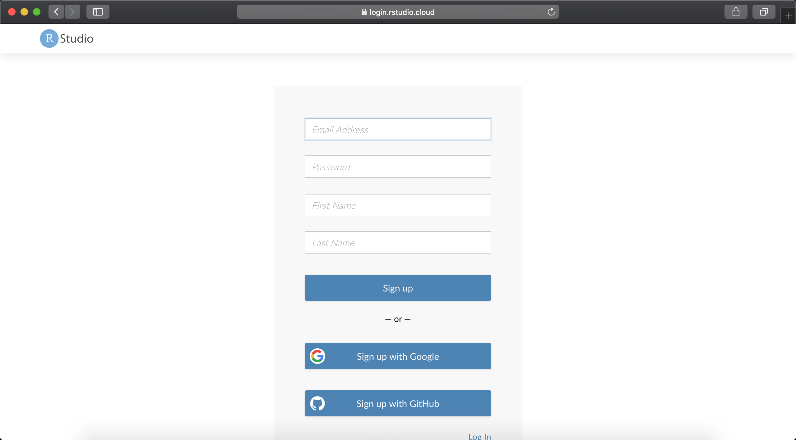
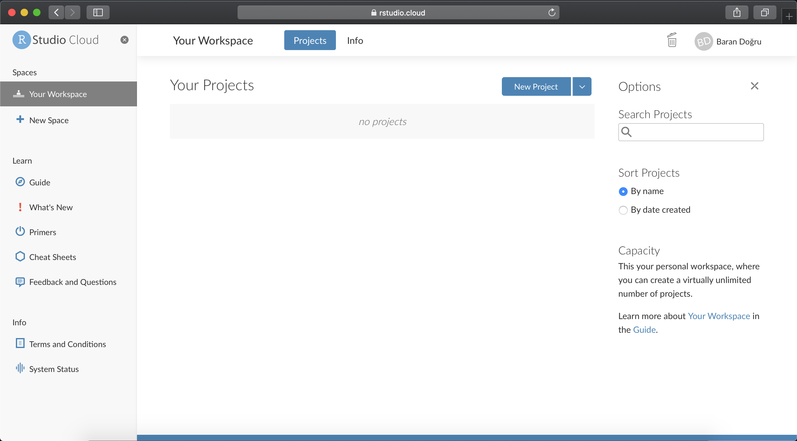
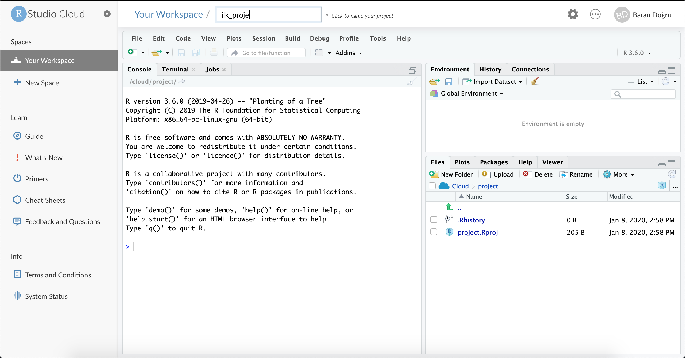
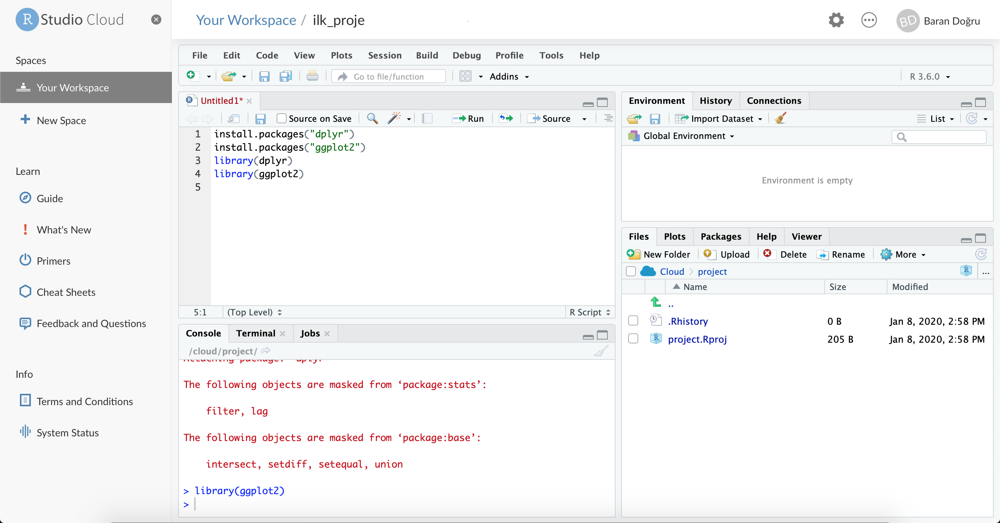

Ekler
Yazar Hakkında
- Baran Doğru
Baran Doğru, Boğaziçi Üniversitesi Endüstri Mühendisliği öğrencisidir. Veri bilimine büyük ilgi duyan Baran Doğru Algopoly’de staj yaptığı dönemde bu dökumanın oluşturulmasında büyük pay sahibi olmuştur. Kendisine ulaşmak için LinkedIn hesabını ziyaret edebilirsiniz.
RStudio Cloud’da Çalışma
RStudio Cloud, R ve RStudio’yu bilgisayarınıza indirmeden çevrimiçi olarak kodlarınızı yazabileceğiniz, çalışmalarınızı is arkadaşlarınızla rahatça paylaşabileceğiniz, gerekli paketleri bilgisayarınıza yükleyip yüklemediğinizi dert etmeyeceğiniz tamamen ücretsiz bir platformdur.
RStudio Cloud’a erişmek ve platformu kullanmak için aşağıdaki adımları izleyebilirsiniz.
- Tercih ettiğiniz web tarayıcıda “RStudio Cloud” yazarak aratılınca karşınıza çıkan ilk linke tıkladığınızda bu ekranla karşılaşacaksınız. Ana ekranın sağ üst köşesindeki “Sign Up” butonuna tıklayarak kayıt ekranına ulaşın.
- Karşınıza çıkan kayıt formunu doldurun.

- Kaydınızı tamamlayın ve hesabınıza giriş yapın. Artık RStudio Cloud’u kullanmaya hazırsınız.

- İlk projenizi oluşturmak için “New Project” butonuna tıklayın.

- Açılan ilk projenize R Script dosyası eklemek için ise üstteki bardan “File”, “New File” ve “R Script” sırasıyla seçin. Artık R’da kod yazmaya hazırsınız.

Örnek Projenin Kodu ve Çalıştırma Linki
Bu aşamada Motivasyon kısmında gösterilen uygulamanın kodu ve çalıştırma linki paylaşılacaktır. Bu örnek bu kitapta anlatılan seviyenin biraz üstünde olabilir, herhangi bir soru durumunda yazara ulaşmak için Yazar Hakkında bölümünde verilen iletişim bilgisi kullanılabilir.
- Uygulamayı bilgisayarınızda çalıştırmak için aşağıdaki kodu çalıştırabilirsiniz,
- Uygulamanın kodu ise aşağıdaki gibidir,
# gerekli paketlerin yüklenmesi
library(shiny)
library(dplyr)
library(tidyr)
library(ggplot2)
library(lubridate)
library(DT)
# verinin indirilmesi
ptfsmf <- readRDS(url("https://github.com/acikenerji/verianalizi101/blob/master/duzenlenmis_ptfsmf.rds?raw=true"))
# Kullanıcı arayüzünün tanımlanması
ui <- fluidPage(
# Uygulama başlığının girilmesi
titlePanel("2019 YILI PİYASA TAKAS FİYATI - SİSTEM MARJİNAL FİYATI VERİSİ"),
# Kenar çubuğunun tanımlanması
sidebarLayout(
sidebarPanel(
(title = "İncelemek istediğiniz veriyi ve tarihi seçiniz."),
selectInput("variableIn", "1. İncelemek istediğiniz değişkeni seçiniz." ,
choices=c("Hepsi", "PTF", "SMF"), selected="Hepsi"),
dateRangeInput("dateIn",
"2. İncelemek istediğiniz tarih aralığını seçiniz.",
start=min(ptfsmf$Tarih),
end=max(ptfsmf$Tarih),
min=min(ptfsmf$Tarih),
max=max(ptfsmf$Tarih),
format="dd/mm/yyyy",
separator="ve",
language="tr",
weekstart=1),
p("Kullanılan veri ", tags$a(href = "https://rapor.epias.com.tr/rapor/xhtml/ptfSmfListeleme.xhtml",
"EPİAŞ Raporlama Sayfası'ndan",
target = "_blank"),
" sayfasından alınmıştır."),
p("Bu app Boğaziçi Üniversitesi Endüstri Mühendisliği öğrencisi",
strong("Baran Doğru"), "tarafından hazırlanmıştır.",
"Kendisine", tags$a(href = "https://www.linkedin.com/in/barandogru", "LinkedIn",
target = "_blank"),
"hesabından ulaşabilirsiniz.")
),
# Ana panonun tanımlanması
mainPanel(
tabsetPanel(type = "tab",
tabPanel("Grafik", plotOutput("plot1")),
tabPanel("Veri Seti Özeti", verbatimTextOutput("summary")),
tabPanel(title = "Ham Veri", dataTableOutput("data", height = "500px"))
),
)
)
)
# Arka planda işlemleri uygulayan "server"ın tanımlanması
server <- function(input, output) {
# grafik çıktısının tanımlanması
output$plot1 <- renderPlot({
# verinin grafik icin düzenlenmesi
ptfsmf <- ptfsmf %>% mutate(Saat = hour(Tarih), Tarih = as.Date(Tarih)) %>%
pivot_longer(cols = PTF:SMF, names_to = "Degisken", values_to = "Fiyat")
pl_df <- ptfsmf %>%
filter(Tarih >= input$dateIn[1] & Tarih <= input$dateIn[2]) %>%
group_by(Degisken, Saat) %>%
summarise(Fiyat = mean(Fiyat))
if(input$variableIn != "Hepsi"){
pl_df <- pl_df %>% filter(Degisken == input$variableIn)
ggplot(pl_df, aes(x=Saat, y=Fiyat, color=Degisken)) +
geom_line() +
theme_minimal() +
scale_x_discrete(limits=c(0:23)) +
labs(title = "Saatlere Göre Fiyatlar - Çizgi Grafiği") +
theme(axis.text.x = element_text(angle = 45), legend.position = "bottom",
legend.title = element_blank())
}
else{
ggplot(pl_df, aes(x=Saat, y=Fiyat, color=Degisken)) +
geom_line() +
theme_minimal() +
scale_x_discrete(limits=c(0:23)) +
labs(title = "Saatlere Göre Fiyatlar - Çizgi Grafiği") +
theme(axis.text.x = element_text(angle = 45), legend.position = "bottom",
legend.title = element_blank())
}
})
# tablo çıktısının tanımlanması
output$data <- renderDataTable({
ptfsmf$Tarih <- as.character(ptfsmf$Tarih)
ptfsmf <- ptfsmf %>% filter(Tarih >= input$dateIn[1] & Tarih <= input$dateIn[2]) %>%
select(Tarih, PTF, SMF)
if(input$variableIn != "Hepsi"){
ptfsmf <- ptfsmf %>% select(Tarih, input$variableIn)
datatable(ptfsmf)
}
else
datatable(ptfsmf)
})
# özet çıktısının tanımlanması
output$summary <- renderPrint({
ptfsmf <- ptfsmf %>%
mutate(Tarih_temp = as.Date(Tarih)) %>%
filter(Tarih_temp >= input$dateIn[1] & Tarih_temp <= input$dateIn[2]) %>%
select(-c(Tarih_temp, NDF, PDF))
if(input$variableIn != "Hepsi"){
ptfsmf <- ptfsmf %>% select(Tarih, input$variableIn)
summary(ptfsmf)
}
else
summary(ptfsmf)
})
}
# Uygulamanın çalıştırılması
shinyApp(ui = ui, server = server)